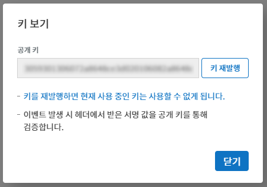
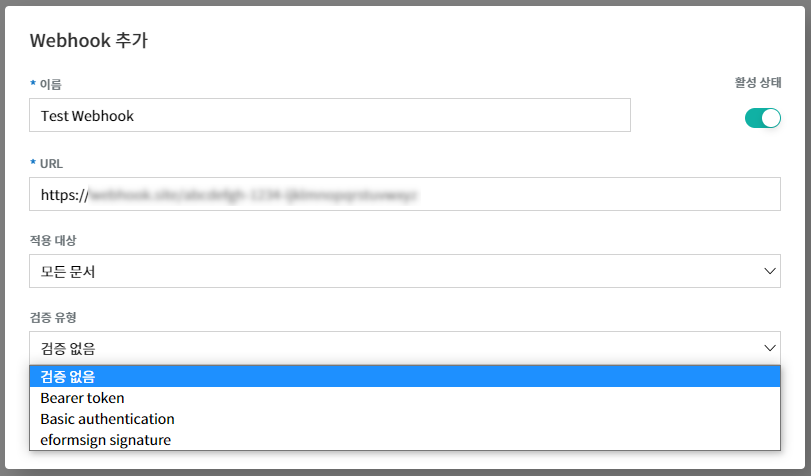
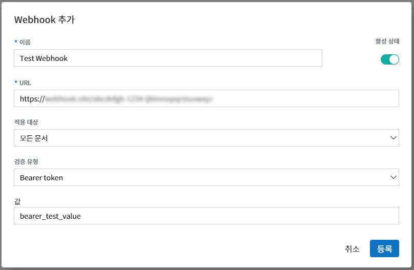
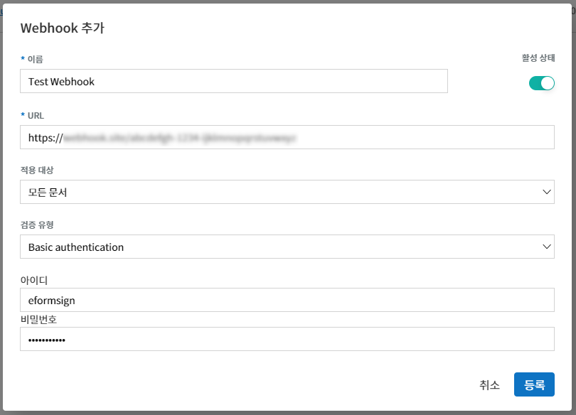

eformsign Webhook 사용하기¶
eformsign에 이벤트가 발생했을 때 발생한 이벤트의 정보를 고객 시스템/서비스로 알려주는 기능입니다. Webhook을 설정하면, 고객의 Webhook endpoint로 해당 이벤트 정보를 HTTP POST형식으로 알려줍니다.
Tip
Webhook의 endpoint는 고객의 client callback URL을 뜻합니다. Open API를 지속적으로 호출하여 변경사항을 체크하는 방법(polling)과 비교하여 불필요한 호출 없이 eformsign 상의 이벤트에 대한 정보를 얻을 수 있습니다.
시작하기¶
Webhook 추가하기¶
eformsign에 대표 관리자로 로그인 후, 메뉴에서 [커넥트] > [API / Webhook] 페이지로 이동합니다.
{kind=link}
[Webhook 관리] 탭을 선택하고 Webhook 추가 버튼을 클릭합니다.
{kind=link}
Webhook 추가 팝업창에 이름, Webhook을 수신할 URL(Endpoint URL), 활성 상태를 선택합니다.
{kind=link}
적용 대상을 선택합니다. 적용 대상은 모든 문서, 템플릿이 없이 만든 문서, 템플릿으로 만든 문서 중에 선택할 수 있습니다.
{kind=link}
모든 문서: 해당 회사에서 생성된 모든 문서에 대해 Webhook이 발송됩니다.
템플릿이 없이 만든 문서: 내 파일로 문서 작성으로 템플릿 없이 생성한 문서에 대해 Webhook이 발송됩니다.
템플릿으로 만든 문서: 선택한 템플릿으로 생성된 문서에 대해 Webhook이 발송됩니다.
Note
템플릿 선택은 다음과 같은 절차를 통해 수행하실 수 있습니다.
① 적용 템플릿 목록 선택창을 클릭하면 템플릿 목록이 표시됩니다. 목록에서 추가하고자 하는 템플릿을 선택합니다. 이 때, 템플릿( )을 선택해야 합니다. 카테고리(
)을 선택해야 합니다. 카테고리( )를 선택하면 적용 템플릿 목록에 추가되지 않습니다.
)를 선택하면 적용 템플릿 목록에 추가되지 않습니다.
{kind=link}
② 추가하고자 하는 템플릿을 선택 후, 우측의 추가 버튼을 클릭합니다.
{kind=link}
③ 적용 템플릿 목록에 선택한 템플릿이 추가 된 것을 확인할 수 있습니다. 이 절차를 반복하여, 여러 템플릿을 추가할 수도 있습니다.
{kind=link}
검증 유형을 선택합니다. 검증 유형은 검증 없음, Bearer token, Basic authentication, eformsign signature 중에서 선택할 수 있습니다. 각 검증 유형에 대한 설명은 Webhook 검증하기을 확인해 주세요.
{kind=link}
등록 버튼을 클릭하면 Webhook이 추가됩니다. Webhook 관리 목록에서 추가한 Webhook을 확인할 수 있습니다.
{kind=link}
Webhook 관리하기¶
Webhook 목록에서 각 Webhook 우측의 작업 버튼을 통해 관리 작업을 수행할 수 있습니다.

키 보기¶
검증 유형을 eformsign signature로 설정한 경우, Webhook 검증을 위해 필요한 공개 키를 확인할 수 있습니다. 키 재발행 버튼을 클릭해 키를 재발행할 수 있습니다. 키를 재발행 할 경우, 기존에 사용 중이던 키는 사용할 수 없게 됩니다.
검증 유형을 eformsign signature 이외의 다른 유형으로 설정한 경우, 빈 값이 표시됩니다.
{kind=link}
편집¶
등록된 Webhook의 이름, URL, 활성 상태, 적용 대상, 검증 유형을 편집할 수 있습니다.
삭제¶
등록된 Webhook을 삭제할 수 있습니다.
테스트¶
설정한 Webhook URL로 테스트 Webhook을 전송하고, 결과를 반환합니다.
테스트 Webhook의 Body는 다음과 같습니다. 설정한 검증 유형에 따라, 헤더에 관련 정보가 포함되어 전송됩니다.
{
"webhook_id": "해당 Webhook ID",
"webhook_name": "해당 Webhook 이름",
"company_id": "회사 ID",
"event_type": "document",
"document": {
"id": "test_doc_id",
"document_title": "test_document_title",
"template_id": "test_template_id",
"template_name": "test_template_name",
"workflow_seq": 0,
"template_version": "1",
"history_id": "test_document_history_id",
"status": "doc_create",
"editor_id": "사용자 ID",
"updated_date": "현재 시간(UTC Long)"
}
}
{kind=link}
{kind=link}
{kind=link}
Webhook 검증하기¶
수신한 Webhook이 eformsign에서 호출한 정상적인 Webhook이 맞는지 검증할 수 있는 기능입니다.
Webhook 추가 혹은 편집 시, 다음과 같이 검증 유형을 선택할 수 있습니다.
{kind=link}
검증 없음
검증을 위한 별도의 정보 없이 Webhook을 발송합니다. 이 경우에도 이벤트 정보는 확인할 수 있지만, 수신한 Webhook이 정상 Webhook인지 검증할 수 없습니다.
Bearer Token
검증을 위해 사전 설정한 토큰 값을 이용하는 방식입니다. Webhook 추가 혹은 편집 시, 검증 유형을 Bearer token으로 선택하고 토큰으로 사용할 값을 값란에 입력합니다. 이와 같이 설정하면, Request Header의 Authorization 필드에 해당 값을 포함하여 Webhook을 전송하게 됩니다.
{kind=link}
예를 들어 위와 같이 값을 bearer_test_value라고 입력한 경우, Webhook 수신 시 Header에서 다음과 같은 내용을 확인할 수 있습니다.
Authentication : Bearer bearer_test_value
이처럼 수신한 Webhook의 Header에서 Token 값을 추출한 후, 사전 설정한 값과 일치하는지 확인하는 방식으로 검증할 수 있습니다.
Basic Authentication
검증을 위해 아이디와 비밀번호를 이용하는 방식입니다.
Webhook 추가 혹은 편집 시, 검증 유형을 Basic authentication으로 선택하고 인증용으로 사용할 아이디와 비밀번호를 입력합니다.
이와 같이 설정하면, Request Header의 Authorization 필드에 사전 설정한 아이디와 비밀번호가 아이디:비밀번호 형태로 Base64 인코딩 한 값을 포함하여 Webhook을 전송하게 됩니다.
{kind=link}
예를 들어 위와 같이 아이디를 eformsign, 비밀번호를 Webhook123!라고 입력한 경우, Webhook 수신 시 Header에서 다음과 같은 내용을 확인하실 수 있습니다.
Authentication : Basic ZWZvcm1zaWduOldlYmhvb2sxMjMh
위의 예시에서 Basic 뒤의 값을 Base64 디코딩 시 eformsign:Webhook123!가 됩니다.
이처럼 수신한 Webhook의 Header에서 Basic 뒤의 값을 Base64 디코딩하여 아이디와 비밀번호를 추출하고, 사전 설정한 아이디 및 비밀번호와 일치하는지 확인하는 방식으로 검증할 수 있습니다.
eformsign Signature
검증을 위해 eformsign Signature 서명값을 이용하는 방식입니다.
Note
eformsign Signature는 비대칭 키 방식과 타원곡선 암호화(Elliptic curve cryptography)를 사용하는 서명 방식입니다. 서명 알고리즘은 SHA256withECDSA를 사용합니다.
Webhook 추가 혹은 편집 시, 검증 유형을 eformsign signature로 설정하면 Request Header의 eformsign_signature 필드에 서명값을 포함하여 Webhook을 전송하게 됩니다.
Header 내용의 예시는 다음과 같습니다.
eformsign_signature : 3045022100b9f1e0cdd21492cb5fa16dabff4c4402bf3efb9a9741a40a0d1c70aeda24bc8c02204a57ca1abab288e968a799e2fecbf18de9ab59c7c5814144b17f32553640a71a
서명 검증을 위한 샘플 코드¶
Webhook의 Header에서 eformsign_signature 값을 추출한 후, Webhook 목록에서 키 보기버튼을 클릭하여 확인할 수 있는 Webhook 공개 키 및 수신한 Webhook의 Request Body 내용을 이용해 검증할 수 있습니다.
Java¶
아래 샘플 코드를 확인해 주세요.
Python¶
키 포맷 처리용 라이브러리를 사용해야 합니다. 작업 전 다음 명령어를 통해 해당 라이브러리를 설치하세요.
pip install https://github.com/warner/python-ecdsa/archive/master.zip
PHP¶
다음 예제의 keycheck.inc.php, test.php 파일이 동일한 경로에 위치하도록 한 후에 진행해야 합니다.
각 언어별 예제¶
다음은 각 언어별 예제입니다.
import java.io.*;
import java.math.BigInteger;
import java.security.*;
import java.security.spec.X509EncodedKeySpec;
/**
* request에서 header와 body를 읽습니다.
*
*/
//1. get eformsign signature
//eformsignSignature는 request header에 담겨 있습니다.
String eformsignSignature = request.getHeader("eformsign_signature");
//2. get request body data
// eformsign signature 검증을 위해 body의 데이터를 String으로 변환 합니다.
String eformsignEventBody = null;
StringBuilder stringBuilder = new StringBuilder();
BufferedReader bufferedReader = null;
try {
InputStream inputStream = request.getInputStream();
if (inputStream != null) {
bufferedReader = new BufferedReader(new InputStreamReader(inputStream));
char[] charBuffer = new char[128];
int bytesRead = -1;
while ((bytesRead = bufferedReader.read(charBuffer)) > 0) {
stringBuilder.append(charBuffer, 0, bytesRead);
}
}
} catch (IOException ex) {
throw ex;
} finally {
if (bufferedReader != null) {
try {
bufferedReader.close();
} catch (IOException ex) {
throw ex;
}
}
}
eformsignEventBody = stringBuilder.toString();
//3. publicKey 세팅
String publicKeyHex = "이 곳에 발급받은 공개 키를 입력하세요";
KeyFactory publicKeyFact = KeyFactory.getInstance("EC");
X509EncodedKeySpec x509KeySpec = new X509EncodedKeySpec(new BigInteger(publicKeyHex,16).toByteArray());
PublicKey publicKey = publicKeyFact.generatePublic(x509KeySpec);
//4. verify
Signature signature = Signature.getInstance("SHA256withECDSA");
signature.initVerify(publicKey);
signature.update(eformsignEventBody.getBytes("UTF-8"));
if(signature.verify(new BigInteger(eformsignSignature,16).toByteArray())){
//verify success
System.out.println("verify success");
/*
* 이곳에서 이벤트에 맞는 처리를 진행합니다.
*/
}else{
//verify fail
System.out.println("verify fail");
}
import hashlib
import binascii
from ecdsa import VerifyingKey, BadSignatureError
from ecdsa.util import sigencode_der, sigdecode_der
from flask import request
# request에서 header와 body를 읽습니다.
# 1. get eformsign signature
# eformsignSignature는 request header에 담겨 있습니다.
eformsignSignature = request.headers['eformsign_signature']
# 2. get request body data
# eformsign signature 검증을 위해 body의 데이터를 String으로 변환 합니다.
data = request.json
# 3. publicKey 세팅
publicKeyHex = "이 곳에 발급받은 공개 키를 입력하세요"
publickey = VerifyingKey.from_der(binascii.unhexlify(publicKeyHex))
# 4. verify
try:
if publickey.verify(eformsignSignature, data.encode('utf-8'), hashfunc=hashlib.sha256, sigdecode=sigdecode_der):
print("verify success")
# 이곳에 이벤트에 맞는 처리를 진행 합니다.
except BadSignatureError:
print("verify fail")
<?php
namespace eformsignECDSA;
class PublicKey
{
function __construct($str)
{
$pem_data = base64_encode(hex2bin($str));
$offset = 0;
$pem = "-----BEGIN PUBLIC KEY-----\n";
while ($offset < strlen($pem_data)) {
$pem = $pem . substr($pem_data, $offset, 64) . "\n";
$offset = $offset + 64;
}
$pem = $pem . "-----END PUBLIC KEY-----\n";
$this->openSslPublicKey = openssl_get_publickey($pem);
}
}
function Verify($message, $signature, $publicKey)
{
return openssl_verify($message, $signature, $publicKey->openSslPublicKey, OPENSSL_ALGO_SHA256);
}
?>
<?php
require_once __DIR__ . '/keycheck.inc.php';
use eformsignECDSA\PublicKey;
define('PUBLIC_KEY', '이 곳에 발급 받은 공개 키를 입력해주세요.');
/*
* request에서 header와 body를 읽습니다.
*
*/
//1. get eformsign signature
//eformsignSignature는 request header에 담겨 있습니다.
$eformsignSignature = $_SERVER['HTTP_eformsign_signature'];
//2. get request body data
// eformsign signature 검증을 위해 body의 데이터를 읽습니다.
$eformsignEventBody = json_decode(file_get_contents('php://input'), true);
//3. publicKey 세팅
$publicKey = new PublicKey(PUBLIC_KEY);
//4. verify
$ret = - 1;
$ret = eformsignECDSA\Verify(MESSAGE, $eformsignSignature, $publicKey);
if ($ret == 1) {
print 'verify success' . PHP_EOL;
/*
* 이곳에서 이벤트에 맞는 처리를 진행합니다.
*/
} else {
print 'verify fail' . PHP_EOL;
}
?>
Webhook 이벤트¶
Webhook을 설정하면 eformsign에서 특정 이벤트 발생 시 설정한 Webhook URL로 이벤트 정보를 수신할 수 있습니다.
현재 제공 중인 Webhook은 다음과 같습니다.
Webhook 이벤트 종류¶
현재 eformsign에서는 문서 이벤트와 PDF 생성 이벤트에 대해 Webhook을 발송하고 있습니다.
문서 이벤트:eformsign에서 문서의 생성 또는 상태 변경 시 발생하는 이벤트입니다. event_type이 document이고, document Object를 포함하고 있습니다.
PDF 생성 이벤트:eformsign에서 문서의 PDF 파일이 생성될 때 발생하는 이벤트입니다. event_type이 ready_document_pdf이고, ready_document_pdf Object를 포함하고 있습니다.
Webhook 구조¶
Webhook 이벤트 발생 시 사용자가 설정한 Webhook URL로 Webhook이 발송됩니다.
발송되는 Webhook의 Request Body 구조는 다음과 같습니다.
Name |
Type |
설명 |
비고 |
|---|---|---|---|
webhook_id |
String |
이벤트를 발생시킨 Webhook의 ID |
|
webhook_name |
String |
이벤트를 발생시킨 Webhook의 이름 |
|
company_id |
String |
회사 ID |
|
event_type |
String |
발생한 Webhook 이벤트의 종류 |
|
document |
Object |
문서 이벤트의 상세 정보 |
문서 이벤트 발생 시에만 표시됨 (id, document_title, template_id, template_name, workflow_seq, workflow_name, template_version, history_id, status, editor_id, outside_token, updated_date, mass_job_request_id 포함) |
ready_document_pdf |
String |
워크플로우 명칭 |
PDF 생성 이벤트 발생 시에만 표시됨 (document_id, document_title, workflow_seq, workflow_name, template_id, template_name, template_version, document_status, document_history_id, export_ready_list, mass_job_request_id 포함) |
Note
eformsign Webhook의 자세한 구조 및 예시는 eformsign Webhook에서 확인하실 수 있습니다.
문서 상태 코드¶
Webhook의 Request Body에는 문서 상태를 나타내는 코드가 포함되어 있습니다.
문서 이벤트의 경우 document.status, PDF 생성 이벤트의 경우 ready_document_pdf.document_status에 문서 상태 코드가 기재됩니다.
각 코드의 의미는 다음과 같습니다.
Name |
설명 |
|---|---|
doc_tempsave |
초안(최초 작성자 문서 임시 저장 상태) |
doc_create |
문서 작성 |
doc_request_participant |
참여자 요청 |
doc_accept_participant |
참여자 승인 |
doc_reject_participant |
참여자 반려 |
doc_request_reviewer |
검토자 요청 |
doc_accept_reviewer |
검토자 승인 |
doc_reject_reviewer |
검토자 반려 |
doc_reject_request |
반려 요청 |
doc_decline_cancel_request |
반려 요청 거절 |
doc_delete_request |
삭제 요청 |
doc_decline_delete_request |
삭제 요청 거절 |
doc_cancel_request |
요청 취소 |
doc_deleted |
문서 삭제 |
doc_request_approval |
결재 요청(구형 워크플로우) |
doc_accept_approval |
결재 승인(구형 워크플로우) |
doc_reject_approval |
결재 반려(구형 워크플로우) |
doc_request_external |
외부자 요청(구형 워크플로우) |
doc_remind_external |
외부자 재 요청(구형 워크플로우) |
doc_open_external |
외부자 열람(구형 워크플로우) |
doc_accept_external |
외부자 승인(구형 워크플로우) |
doc_reject_external |
외부자 반려(구형 워크플로우) |
doc_request_internal |
내부자 요청(구형 워크플로우) |
doc_accept_internal |
내부자 승인(구형 워크플로우) |
doc_reject_internal |
내부자 반려(구형 워크플로우) |
doc_tempsave_internal |
내부자 임시 저장(구형 워크플로우) |
doc_complete |
문서 완료 |